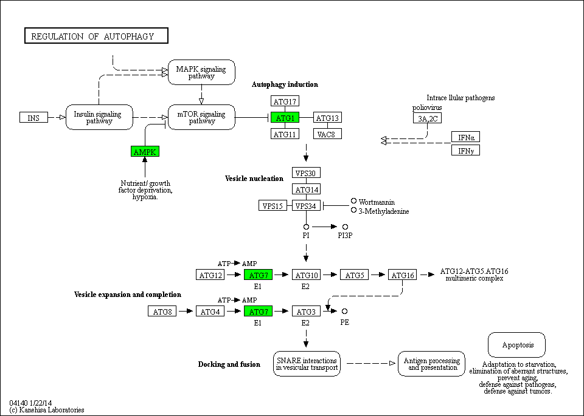

Regulation of autophagy - Oryza sativa japonica (Japanese rice) (RefSeq)
[
Pathway menu
|
Organism menu
|
Pathway entry
|
Download KGML
|
User data mapping
]
Reference pathway
Reference pathway (KO)
-----< Set personalized menu >-----
-----< Sort below by alphabet >-----
Homo sapiens (human)
Homo sapiens (human) + Disease/drug
Pan troglodytes (chimpanzee)
Macaca mulatta (rhesus monkey)
Mus musculus (mouse)
Rattus norvegicus (rat)
Canis familiaris (dog)
Bos taurus (cow)
Sus scrofa (pig)
Equus caballus (horse)
Monodelphis domestica (opossum)
Ornithorhynchus anatinus (platypus)
Gallus gallus (chicken)
Taeniopygia guttata (zebra finch)
Xenopus laevis (African clawed frog)
Xenopus tropicalis (western clawed frog)
Danio rerio (zebrafish)
Branchiostoma floridae (Florida lancelet)
Ciona intestinalis (sea squirt)
Strongylocentrotus purpuratus (purple sea urchin)
Drosophila melanogaster (fruit fly)
Drosophila pseudoobscura pseudoobscura
Drosophila ananassae
Drosophila erecta
Drosophila persimilis
Drosophila sechellia
Drosophila simulans
Drosophila yakuba
Drosophila grimshawi
Drosophila mojavensis
Anopheles gambiae (mosquito)
Aedes aegypti (yellow fever mosquito)
Culex quinquefasciatus (southern house mosquito)
Apis mellifera (honey bee)
Nasonia vitripennis (jewel wasp)
Tribolium castaneum (red flour beetle)
Acyrthosiphon pisum (pea aphid)
Caenorhabditis elegans (nematode)
Caenorhabditis briggsae
Brugia malayi (filaria)
Schistosoma mansoni
Nematostella vectensis (sea anemone)
Hydra vulgaris
Trichoplax adhaerens
Arabidopsis thaliana (thale cress)
Ricinus communis (castor bean)
Populus trichocarpa (black cottonwood)
Vitis vinifera (wine grape)
Oryza sativa japonica (Japanese rice) (RefSeq)
Sorghum bicolor (sorghum)
Zea mays (maize)
Physcomitrella patens subsp. patens
Chlamydomonas reinhardtii
Ostreococcus lucimarinus
Saccharomyces cerevisiae (budding yeast)
Ashbya gossypii (Eremothecium gossypii)
Kluyveromyces lactis
Lachancea thermotolerans
Vanderwaltozyma polyspora
Candida glabrata
Komagataella phaffii
Debaryomyces hansenii
Scheffersomyces stipitis
Candida albicans
Yarrowia lipolytica
Neurospora crassa
Podospora anserina
Magnaporthe oryzae
Sclerotinia sclerotiorum
Botrytis cinerea
Aspergillus nidulans
Aspergillus fumigatus
Aspergillus oryzae
Aspergillus niger
Aspergillus flavus
Aspergillus fischeri
Penicillium rubens
Coccidioides immitis
Schizosaccharomyces pombe (fission yeast)
Cryptococcus neoformans JEC21
Cryptococcus neoformans B-3501A
Laccaria bicolor
Moniliophthora perniciosa
Ustilago maydis
Malassezia globosa
Monosiga brevicollis
Dictyostelium discoideum (cellular slime mold)
Entamoeba histolytica
Entamoeba dispar
Plasmodium falciparum Dd2
Plasmodium falciparum HB3
Plasmodium yoelii
Plasmodium chabaudi
Plasmodium berghei
Plasmodium knowlesi
Plasmodium vivax
Theileria annulata
Babesia bovis
Cryptosporidium parvum
Cryptosporidium hominis
Toxoplasma gondii
Tetrahymena thermophila
Paramecium tetraurelia
Phaeodactylum tricornutum
Thalassiosira pseudonana
Trypanosoma brucei
Trypanosoma cruzi
Leishmania major
Trichomonas vaginalis
184%
150%
122%
100%
82%
67%
55%

 Regulation of autophagy - Oryza sativa japonica (Japanese rice) (RefSeq)
Regulation of autophagy - Oryza sativa japonica (Japanese rice) (RefSeq)
 Regulation of autophagy - Oryza sativa japonica (Japanese rice) (RefSeq)
Regulation of autophagy - Oryza sativa japonica (Japanese rice) (RefSeq)